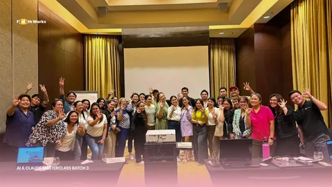
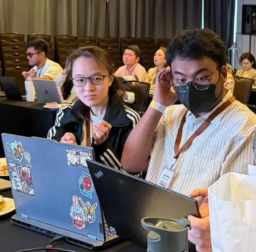
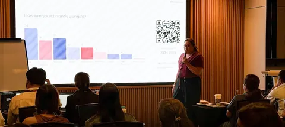
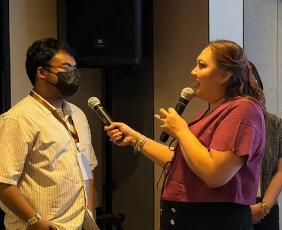

THE TASK
Turn a topic into a content plan.
Start with your audience, one business objective and approved source notes.
- Your audience
- One business objective
- Approved source notes
Human first. AI empowered.
Hands-on workshops and guided programs for founders, professionals, and teams. Start with one task. Build a useful workflow. Bring it into your work.
Learn. Implement. Scale. Made for real-world work.
THE TASK
Turn a topic into a content plan.
LESS OVERWHELM. MORE POSSIBILITY.
A LITTLE LEARNING. A REAL NEXT STEP.
Built around your work
01 / Start where you are
You don’t need to learn every tool. Start with the outcome that matters to you.
Make it concrete
Illustrative learning projects—not claims of customer results. Explore how AI can support a task while you stay in control.
02 / Learning becomes execution
Understand what AI can do, where human judgment matters, and how to choose a practical starting point.
Example: an AI readiness mapUse AI to support an everyday task in your work. Build confidence through useful practice and review the result.
Example: a repeatable content workflowTurn an idea into a simple prototype that you can explore, test and refine with guidance.
Example: a landing page or lead trackerDefine how the process fits into real work, who is responsible, and what needs a human check.
Example: a documented handoffReview results, gather feedback, and refine your process as your needs and skills grow.
Example: a workflow improvement log03 / Learn by doing
Explore our learning pathways. Choose a program to see the focus and the next step.
Find a high-impact process, design your workflow, and build a first prototype.
Connect positioning, content, and AI-assisted workflows with your business goals.
Explore landing pages, simple trackers, and practical workflow prototypes.
Choose by the work you want to improve
Explore
AI Workforce Masterclass & Accelerator
These are pathway examples. Confirm the exact deliverables in the final program outline.
Program pathways shown for exploration. Upcoming schedules, fees and enrollment details will be announced.
04 / For your organization
Help your team move from AI awareness to practical adoption, with learning shaped around your goals and workflows.
For CEOs, HR and learning leaders, and teams navigating the future of work.

Team learning plan




05 / The bigger picture
A First-World Philippines, powered by AI-empowered Filipinos.
Faith Works brings together learning, leadership, systems, and community to help people turn new possibilities into practical progress.

Founder of Faith Works PH. AI business coach. Future-of-work strategist. Chief Heart Officer.
Practical education, workshops, coaching and strategy.
Explore business systems and automation, starting with your use case.
Stories and conversations about growth and the future of work.
A place to keep learning, share progress and grow with others.
A little clarity before you begin
Many introductory programs are designed for nontechnical learners. Each program will specify its prerequisites so you can choose the right starting point.
It depends on the program. Learning projects may include a workflow plan, content system, landing page or business-assistant prototype. The confirmed program outline will specify the output and support.
Yes. Start with your team size, goals, and preferred format. These help shape a relevant corporate proposal.
Requirements vary. Each program will identify the accounts, subscriptions and equipment needed before you register.
Upcoming dates and registration details will appear when confirmed. For this design preview, use the inquiry builder to prepare your interests for the Faith Works team.
A useful place to begin
A short worksheet to help you choose a task, define a useful output, and decide what a person needs to check.
Download the starter worksheetFree text worksheet · No signup required
Your next chapter starts with one step
Bring your curiosity. Let’s turn it into something useful.